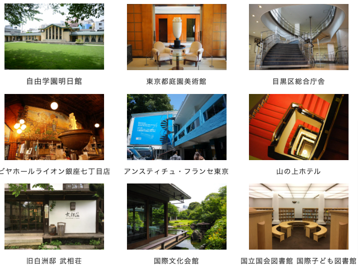

2022.07.08
千田町を珈琲の街にしたいと考えています。
香珈の有る場所は、市役所も近く、学校や公園それに買い物にもとても便利な場所です。
今は無くなってしまいましたが、鷹野橋の公設市場が賑やかだった時は活気がありました。広島大学は跡地が公園として残っていて緑も近くにあり、住みやすい場所だと思っています。
なぜ、珈琲の街を目指すのか、実は珈琲焙煎店があったり、モーニング発祥の店もこの界隈にあります。かつて香珈珈琲が珈琲焙煎を始める前は炒り豆の製造販売をしていました。近く方はもちろん遠くからもたくさんのお客様に浸しんで頂きました。
活気があり、近所付き合いが少なくなった今、珈琲や珈琲のお店でお客様同士が会話する場所になればいいなと思っています。香珈珈琲では、お客様同士が仲良くお話しされてとても良い雰囲気ができています。
少し話が変わりますが、建築物を見るのが好きでどんな建物に人が集まってくるだろうと思っていた時に、「名建築で昼食を」というビデオを見ました。その中に「市井」という漢字が出てきました。読み方をその時初めて知ったのですが、「しせい」と読むそうです。意味は、「人や家の集まっているところ、市街地、巷、などを幅広く指す表現」だそうです。
何故か、この「市井」と「珈琲」が私の中でつながりました。珈琲にも人が集まる力があるってその時感じました。
珈琲で千田町に人が集まる街を今いろいろと思いを巡らせています。
テレビ東京「名建築で昼食を」
アマゾンプライム「名建築で昼食を」

の番組情報ページ _ テレビ東京・ＢＳテレ東 7ch(公式));